A logo that belongs to the Climate Tech Cities family, a weekly events newsletter, and a partner list worth working. Two weeks of setup, then about one sitting a week.
Type it once and every prompt on this page fills in, ready to copy. Nothing is saved: this page stores nothing and has no connection to your Claude or ChatGPT account.
Before you apply
What you are signing up for
What you get
What success looks like
The map
| Week 1 | Logo, made in ChatGPT; Substack set up by the CTC founders |
| Week 2 | Source list, subscriber list, first issue |
| Every week | Harvest, cut, draft, send* |
| Every month | Refresh your opportunities |
| Every three months | Refresh your source list |
| Later | Partners |
* Weekly is the standard for every chapter and the default. If your first two or three harvests come back with fewer than about five events a week after the cut, the toolkit offers every two weeks. That is decided on your city's volume after the evidence is in, never on a busy week.
Everything except the logo runs inside your own Claude account.
Week one · in ChatGPT
Every chapter logo is the same lockup: a square icon on the left, and Climate Tech [your city] stacked on three lines to the right. Only the building silhouette changes from city to city. That consistency is what makes ten chapters look like one organisation.
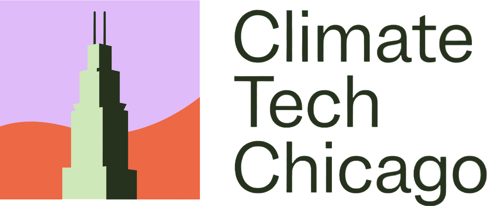
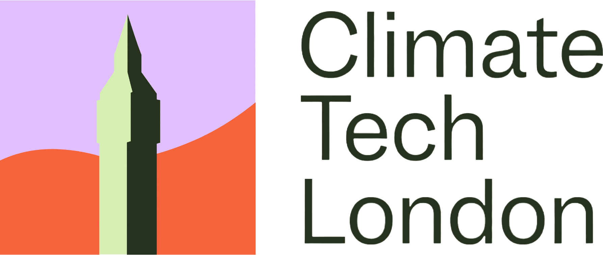
Same lavender field, same orange horizon, same two greens, same wordmark, same proportions. Chicago gets the Willis Tower, London gets the clock tower, New York gets the Empire State. Only the silhouette moves. That is the whole system, and matching it is the entire job.
The square is where all the work happens. These are the same three chapters with the wordmark cropped away, which is the clearest way to see how far the abstraction goes.
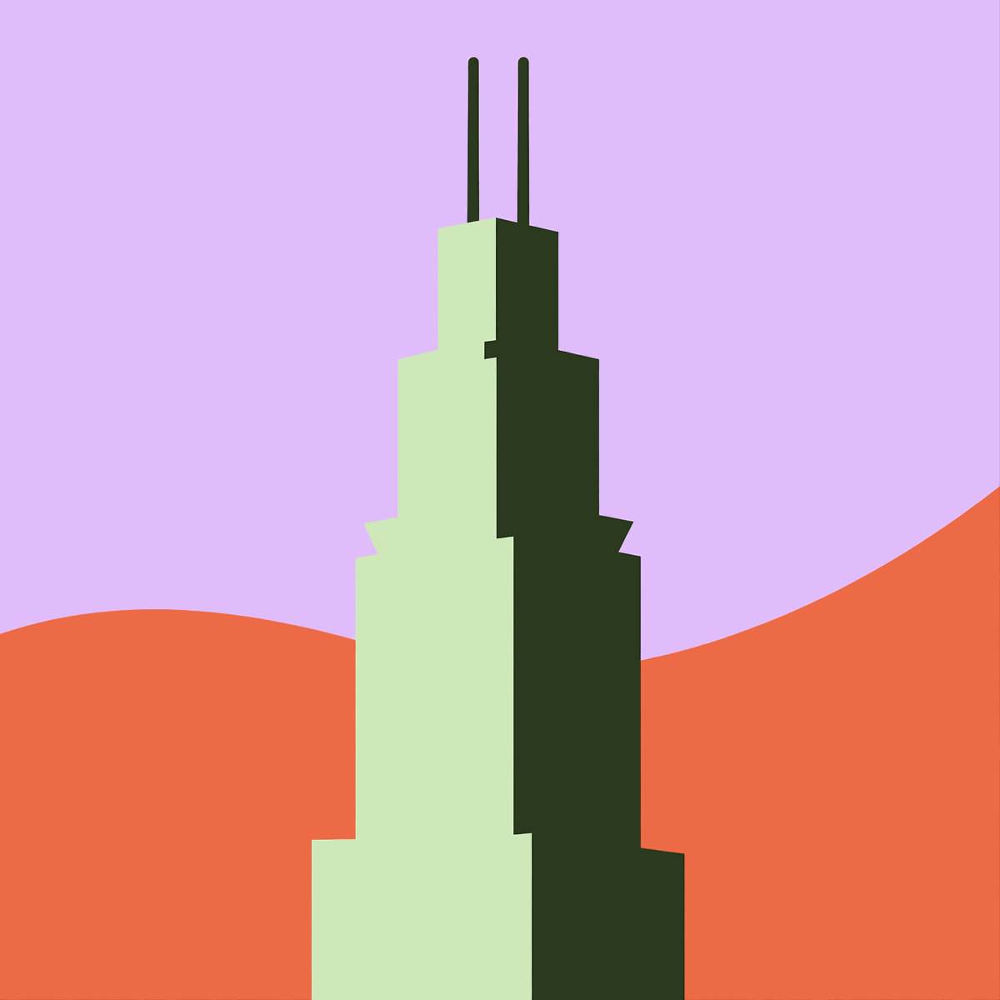
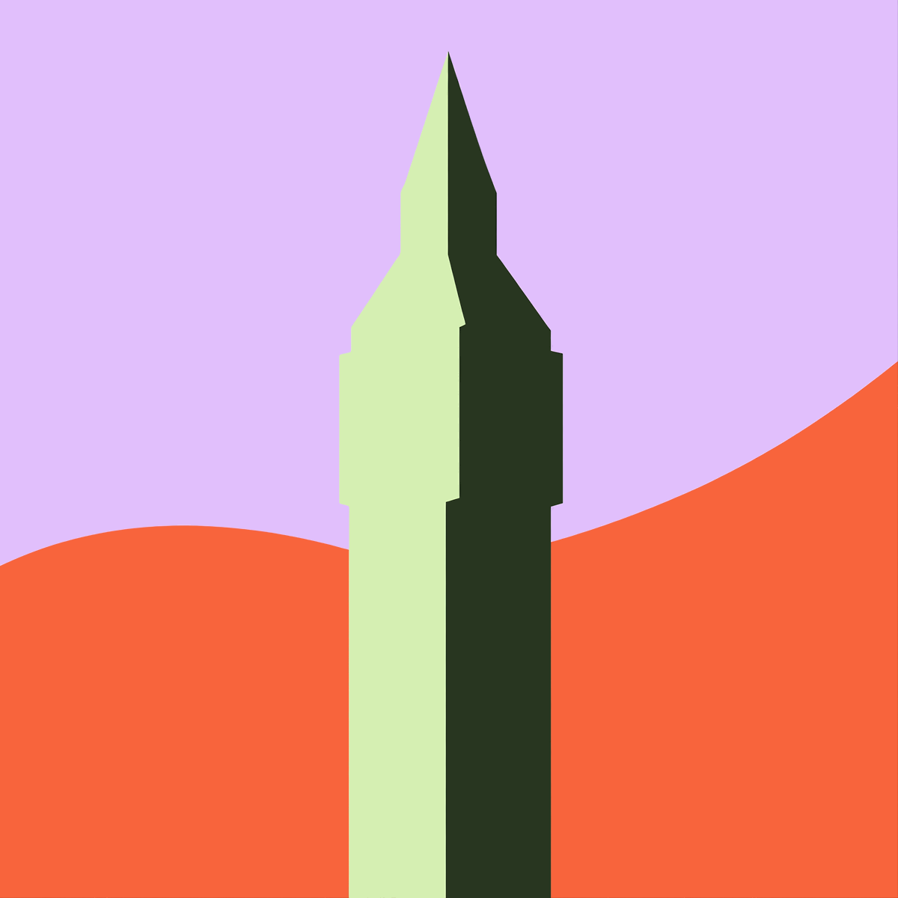
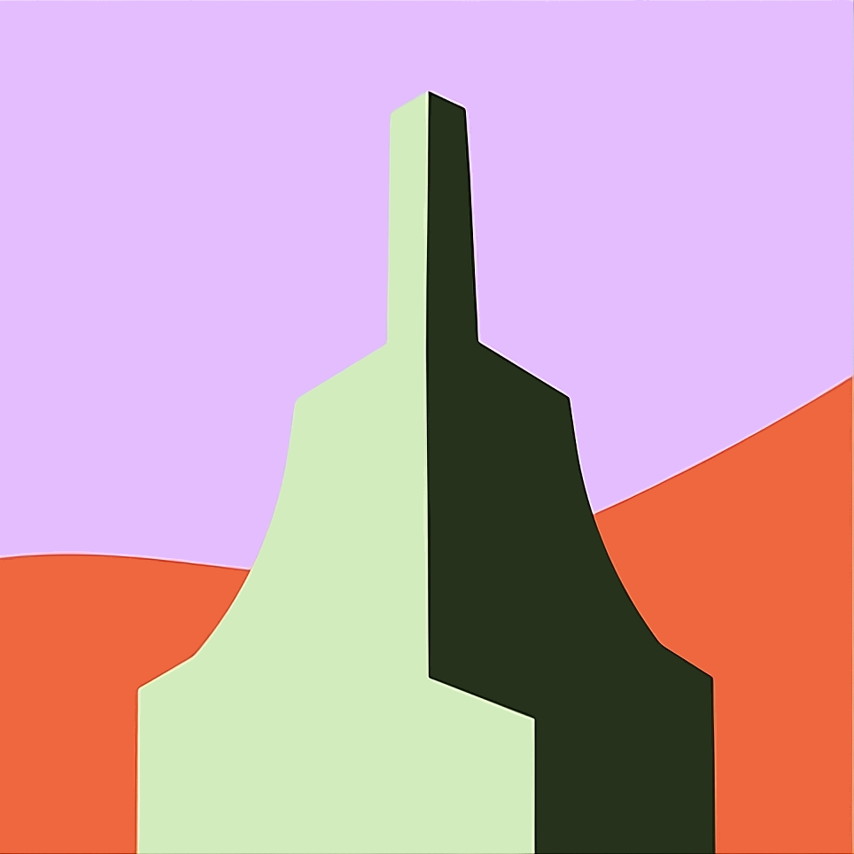
Notice how little detail survives. Two planes, a light side and a dark side, and a handful of steps. If your city's landmark still has windows or a spire made of several pieces, it is not abstracted far enough yet.
This is the house prompt, with your city already filled in. Paste it into ChatGPT and ask for images.
Attach these to the same ChatGPT message. The prompt describes the house style in words, but the references are what actually hold it: without them you get something in the right colours and the wrong proportions.
Attach all five. The lockups set the proportions and the wordmark; the icons show how far to abstract the landmark.
The prompt asks for up to ten. Look for a silhouette a local would name in a second, built from a handful of flat planes. If everything comes back too detailed, say "simpler, fewer planes, more abstract" and run it again. Detail is the usual failure, not the palette.
Send your chosen concept to the founders and wait for a yes. This is the one step you cannot skip: the logo goes on the newsletter, the Luma calendar and everything else the chapter publishes, and changing it later means changing it everywhere.
Your chapter's Substack page is created centrally by Sonam Velani or Alec Turnbull once the logo is signed off. Send them the approved logo and your chapter name, and they send back the page and the login. You do not create a Substack yourself.
Do this once
Three packages and a browser extension. You need a paid Claude account. You do not need to know how to code.
In Claude: Settings, then Capabilities, then Skills. Upload the skill. Install the two plugins through the plugin interface. Turn on code execution in the same panel.
Sign in with the same account.
Named for your chapter. Everything happens inside it.
Which Climate Tech Cities skills do you have available?
Start here
The first thing you run, and the reason you never answer the same question twice.
One at a time, plain language, each with a default you can accept. Reply "default" to any of them and move on. The last one is optional.
What you get back
The settings file is the one every other skill reads. The plan is the one you read. Both from a fictional Denver chapter.
Week two
Everywhere events get announced in your city. Every harvest only finds what this list points at.
With no source list yet, Claude starts here.
You probably already check five or ten calendars by hand. Those are the best rows in the registry, because a real person has already vouched for them. Claude lays out three ways to go and waits for your answer.
Paste links straight into your first message and Claude takes that as your answer rather than making you pick from a menu.
Claude searches Luma, Eventbrite, universities, incubators, city government, professional groups and arts venues. Every source it finds, and every link you paste, gets five checks:
If a source fails a check, Claude names the check instead of dropping it quietly, so you decide.
Read the list before you approve it. You live there and Claude does not, so add the meetup everyone goes to if it is missing.
One row is the same in every chapter's list: the Climate Tech Cities event submission form. Readers of your newsletter send you events through it, and the harvest reads your city's submissions every week alongside your calendars.
What you get back
CTC_Source_Registry_SAMPLE.xlsx
| Source Name | URL | Platform | Method | Tier | Category | Cadence | Last Event | Confidence | Origin | Notes |
|---|---|---|---|---|---|---|---|---|---|---|
| CTC event submissions (all chapters) | airtable.com/… | airtable | auto | core | submissions | continuous | 2026-08-04 | verified | ctc | Standing row in every registry |
| Portland Climate Tech Collective | luma.com/… | luma | auto | core | luma | 2 to 4 events a month | 2026-08-04 | verified | user | Lead already followed this |
| PSU Institute for Sustainable Solutions | example.edu/… | web | auto | core | university | weekly Sep to Jun | 2026-06-11 | verified | research | Empty in July and August. Term break, not death |
Unverified rows are shaded; any missing field is shaded red and named. Fictional Portland chapter.
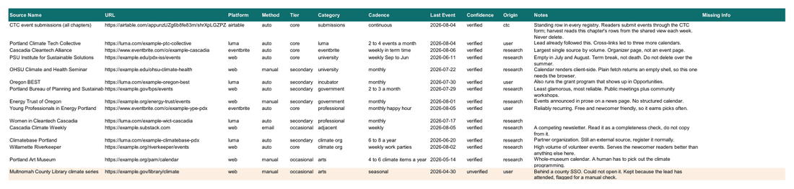
The real file. Click to enlarge.Every week
The tools collect, verify, format, and draft. You choose what makes the issue and rewrite the note, the picks, and the housekeeping in your own words.
Every Claude stage runs a second-pass check on its own output (links re-opened, claims checked against pages, prose checked against the voice file) before it hands the file to you.
The same prompt every week. It works out where you are, runs the right skill, and stops when it needs you. If you would rather drive each step yourself, the prompts below still work.
In words: Claude harvests everything from your source list into a spreadsheet. You cut the sheet and upload it back. Claude assembles the issue from your edited file and you write the words. You send it.
Collect
Claude sweeps every source in your registry and hands back a spreadsheet of everything happening.
YouCut
You open the sheet, delete rows, and upload it back. This is the decision that sets the shape of the issue.
BothAssemble and write
Claude lays out the whole issue. You fill the gaps it deliberately leaves blank.
YouSend
Check it over, paste into Substack, read it once end to end, and hit send.
Step one
Paste the prompt into your project. Claude sweeps every source in your registry and hands back a spreadsheet. It collects everything without filtering, on purpose: collecting and judging are separate jobs, and mixing them turns a short task into a long one.
It also reads the Climate Tech Cities event submission form and pulls in anything a reader sent in for your city, marked submitted in a Source column so you can see where each row came from. Every submitted link gets opened and checked like any other.
Before it sweeps, Claude asks whether you already know about anything that will not be on a calendar. Paste it in and it goes into the sheet as lead. Every row says where it came from: registry, submitted, or lead.
The spreadsheet marks anything incomplete: the empty cell is shaded red and named in a Missing Info column, so you can see at a glance what needs a second look.
What you get back
| Event Name | Date | Start Time (PDT) | Registration Link | Event Type | Access | Location | Block | Source |
|---|---|---|---|---|---|---|---|---|
| Grid Interconnection 101 | 2026-08-12 | 17:30 | luma.com/… | In-person | Free | Ecotrust Building, 721 NW 9th Ave, Portland | this_week | registry |
| Repair Cafe: Small Appliances | 2026-08-13 | 10:00 | example.org/… | In-person | Not stated | St. Johns Community Center, 8427 N Central St | this_week | submitted |
| Cascadia Climate Data Meetup | 2026-08-13 | 18:30 | luma.com/… | In-person | Free | WeWork Custom House, 220 NW 8th Ave, Portland | this_week | registry |
The time header carries your chapter's timezone. Fictional Portland chapter.
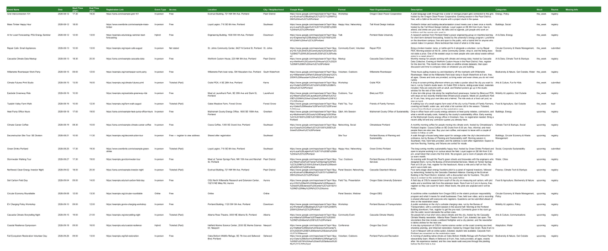
The real file. Click to enlarge.Step two
Open the spreadsheet and delete rows. There is no prompt for this one, because it is judgment. How many events end up in the newsletter is decided here, and there is no target number: a good week is however many good events your city actually has.
Delete
submitted were sent in by a reader. Treat them like any other row; if you cut one, it is worth a reply to whoever sent itFlag
Step three
Paste the prompt and attach your edited spreadsheet. Claude reads the sheet, asks you three questions, and builds the issue.
You get two files back, a Word document and an HTML file. Use the HTML file when you go to send: it is the one that holds its formatting in Substack.
It will not start building until you answer. Have these ready.
| Block | Who finishes it |
| 1. Title and subtitle | Claude |
| 2. Opening note | Claude drafts, you rewrite |
| 3. Picks of the week | Claude drafts from your picks, you add the asides |
| 4. Housekeeping and sign-off | Claude drafts from what you tell it, you rewrite |
| 5. Climate Tech Cities and Streetlife Ventures platforms block | Fixed, never changes |
| 6. Opportunities | Claude drafts from your queue, you confirm |
| 7. This Week's Events | Claude, complete |
| 8. Upcoming Events | Claude, complete |
| 9. This Week in Detail | Claude, complete, one entry for every event in This Week's Events |
| 10. Join the fun (submit events, volunteer) | Fixed, never changes |
Blocks 2, 3, and 4 come back fully drafted with a yellow line above each reading [REWRITE IN YOUR OWN WORDS, then delete this line]. Rewrite the block, delete the line. Nothing in square brackets ships. Claude does not leave these blank and does not refuse to draft them; it drafts from what you told it and never invents news, weather, or a verdict on an event nobody went to.
What you end up with
A real New York issue, shortened to fit. The shading shows who wrote what.
Hi all,
Last week we pulled out our N95s once again as wildfire smoke subsumed the summer. The brown-orange skies, torrential rain, and tornado warnings have been stark reminders that climate change is here and now.
For such a global problem, we continually find hope and inspiration in local community. While the summer is a lot quieter, there's still plenty of ways to connect. Here are our picks for the week:
We've postponed Wednesday's Other Intelligence summit until later this year (too many people were out of town!) but are still looking forward to it in the Fall.
Til next week!
Alec, Sonam, and the Climate Tech Cities team
🌎 Climate Tech Cities and Streetlife Ventures Startup and Talent Platforms
Climate Tech Cities and Streetlife Ventures are launching new platforms to support climate founders, funders, and career transitioners. We can't wait to hear from you!
Fixed text and fixed links, the same in every chapter. It sits here, right after the sign-off.
💡 New York Climate Exchange Climate Tech Fellowship
A six-month hybrid program combining expert-led curriculum, mentorship, and non-dilutive funding. Applications due August 1.
🔌 WISE-NYC: August Lunch on AI in Sustainability
When: Tuesday, Aug 18
Where: New York, NY
This lunch discussion explores the paradox of AI adoption in sustainability work, examining both its practical benefits and environmental costs. Hosted by Parichat Wrolstad, the event brings together WISE Community members to share experiences with AI implementation and discuss responsible usage strategies.
🌿 A Community Reading Of Black Eco-Poetry Feat. Keenyn Omari
When: Wednesday, Aug 19
Where: New York, NY
Black Forest School presents a community reading of 40+ Black eco-poems from a collection spanning over 1,000 works in 20+ languages by 300+ poets. The event features live jazz accompaniment by flautist Keenyn Omari, an interactive poetry relay, and a temporary installation within Project EATS' urban farm setting.
One entry for every event in This Week's Events, written from each event's own page. Readers use this so they do not have to click into every event.
Join the Fun!
Submit Events. Running something climate-related in the city? Tell us about it and it goes into next week's list. Submit an event
Volunteer. Climate Tech Cities runs on volunteers. If you want to help with events, the newsletter, or the chapter itself, say hello. Volunteer with Climate Tech Cities
The last block of every issue. Two fixed links: the event submission form and the volunteer form.
What you get back
A complete launch-scale issue exactly as Claude returns it, yellow rewrite lines still in. Fictional Portland chapter.
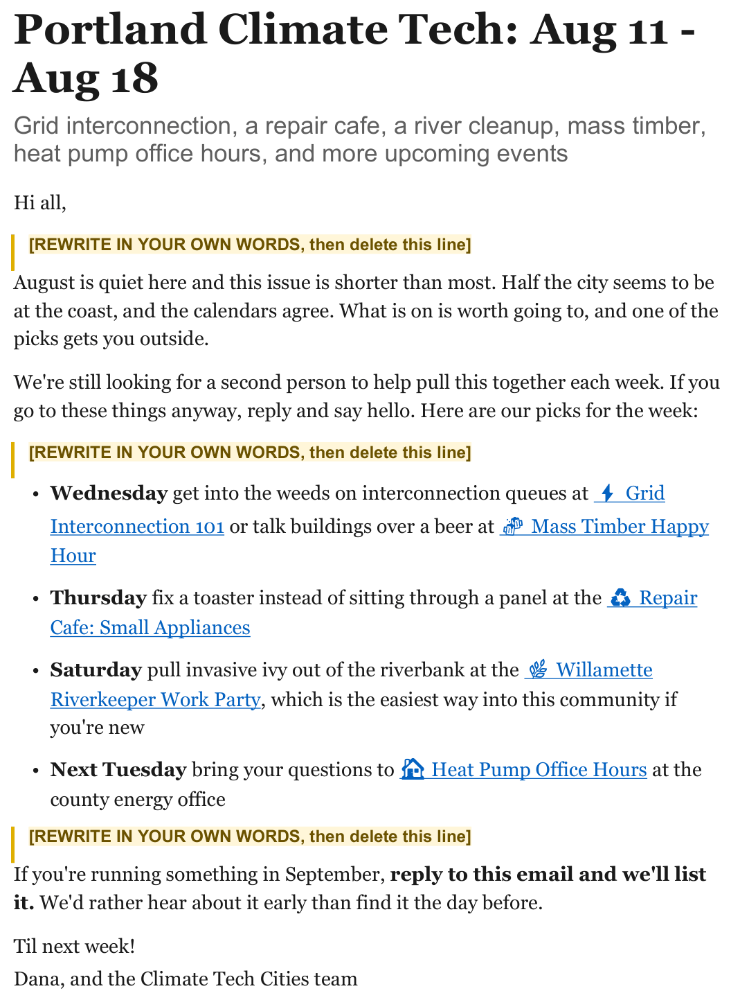
Page one of six. The yellow lines are the rewrite markers. Click to enlarge.Step four
Check first
Then send
Every month
Grants, fellowships, accelerators, and open calls, kept in one file your issues draw from. Run this monthly. Your source list is the quarterly one, and they are the only two jobs outside the weekly cycle.
Claude sweeps program pages and public funders, aggregators, LinkedIn through your browser if you say yes, and the local organizations in your partner map.
What you get back
| Opportunity | Organization | Type | Deadline | Who it is for | Scope | Status |
|---|---|---|---|---|---|---|
| PSU Climate Venture Studio | Portland State University | Accelerator | 2026-09-30 | Student and alumni founders | Portland | Not used |
| Portland Clean Energy Fund Community Grants | Portland Clean Energy Community Benefits Fund | Grant | 2026-10-01 | Nonprofits and community groups in Portland | Portland | Not used |
| Oregon BEST Early Commercialization Grant | Oregon BEST | Grant | 2026-09-15 | Hardware climate startups with a physical presence | Oregon | Not used |
The Open sheet, with a Closed sheet beside it. Fictional Portland chapter.
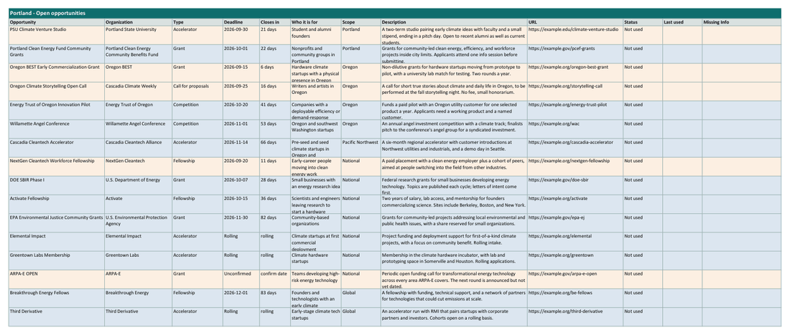
The real file. Click to enlarge.Later
Partners are where venues, audiences, and speakers come from. A lead with no partners hosts events in bars for their own friends. The partner map is also what the monthly opportunities run reads for local programs, so it pays off in the newsletter too.
Universities, incubators and accelerators, startup programs, industry partners, and capital partners. Every organization is verified before it goes in. You get a workbook.
What you get back
CTC_City_Resources_SAMPLE.xlsx
| Organization | Type | Focus Area | Description | Website |
|---|---|---|---|---|
| Tidewater Climate Labs | Incubator | Hardware climate startups | Tidewater Climate Labs is a climate hardware incubator… | example.org/… |
| Kiln Accelerator | Accelerator | Pre-seed climate software and services | Kiln is a twelve week accelerator in downtown… | example.org/… |
The workbook has the five-block city tab plus a City Narratives sheet. The city, Alderport, and every organization in it are fictional.
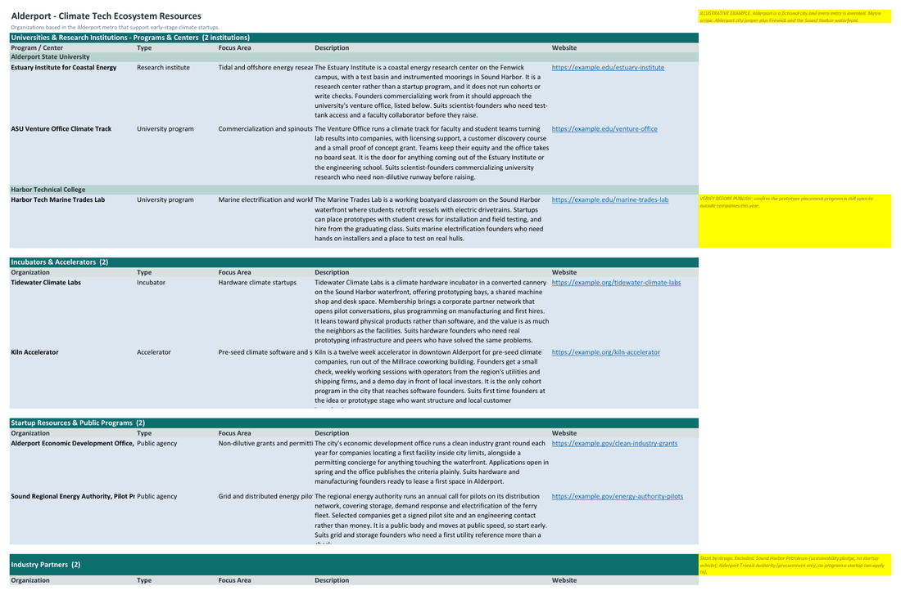
The real file. Click to enlarge.Cut anything that quietly closed. Add anything obvious it missed. Then Claude adds the categories a resource page leaves out and returns a tiered list: who to approach, in what order, and what to ask each one for first. Anything you add by hand is never dropped silently.
What you get back
| Organization | Category | Why them | Ask for first | Contact route |
|---|---|---|---|---|
| Greentown Labs Houston | Accelerators and incubators | Their member companies are the founders we want… | Co-host our launch mixer in your event space… | Community or events team, via the contact form |
| Ion District | Coworking and innovation districts | They publish a public events calendar with an… | Add our monthly meetup to the Ion events calendar | Calendar submission form on the events page |
| Rice Alliance for Technology and Entrepreneurship | Universities and research centers | They convene the founder and investor side… | Put our chapter lead on a panel at your next event | Named program director listed on the Rice Alliance site |
Three rows from the Tier 1 band; the tier is the band header above each group, not a column. The map is a separate internal file with a Not approaching sheet. The organizations are real Houston ones, but every line written about them here is illustrative and unverified.
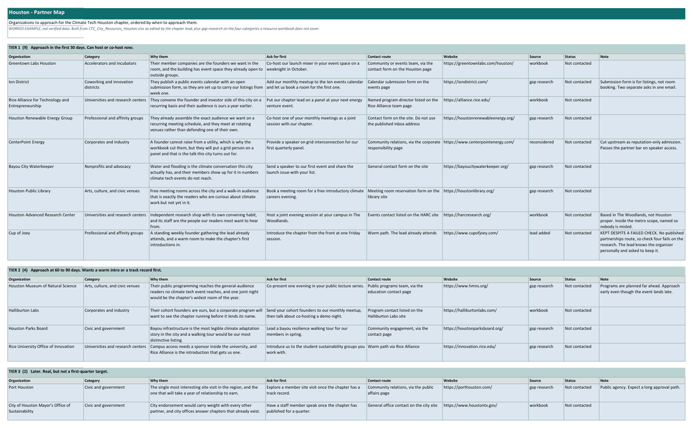
The real file. Click to enlarge.In your voice, one at a time, after asking you seven questions. It asks for a recent email you have written so it can match how you actually write, and it never sends anything.
Host our first event in your space on a weeknight in October
Explore ways to collaborate
The test is whether someone could say yes in a single email reply.
Troubleshooting
Everything in one place
Install instructions are in What you install.
Samples
Every file the toolkit produces, so you can see one before you run anything. All fictional.
{kind=link}
{kind=link}
{kind=link}
{kind=link}
{kind=link}